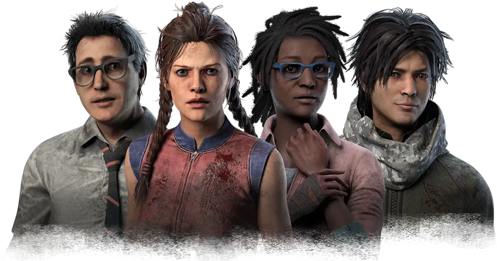
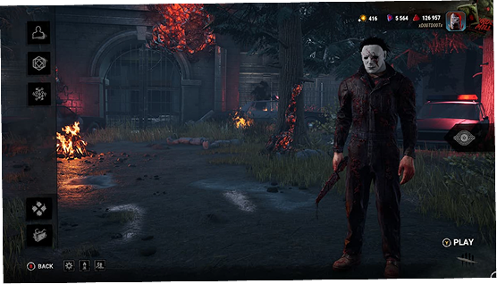
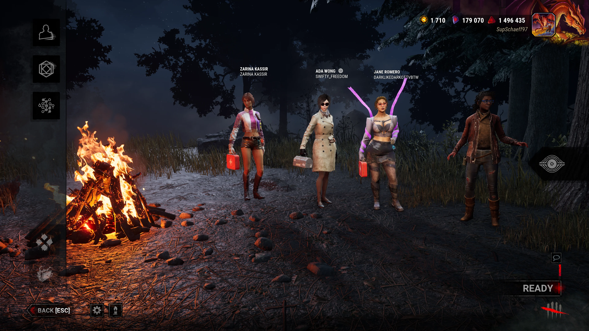
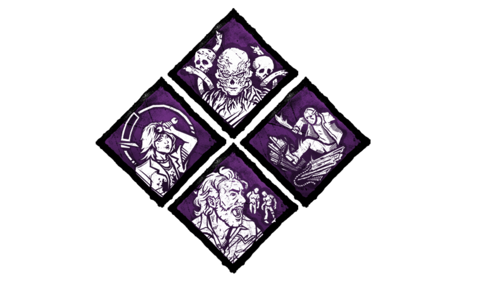
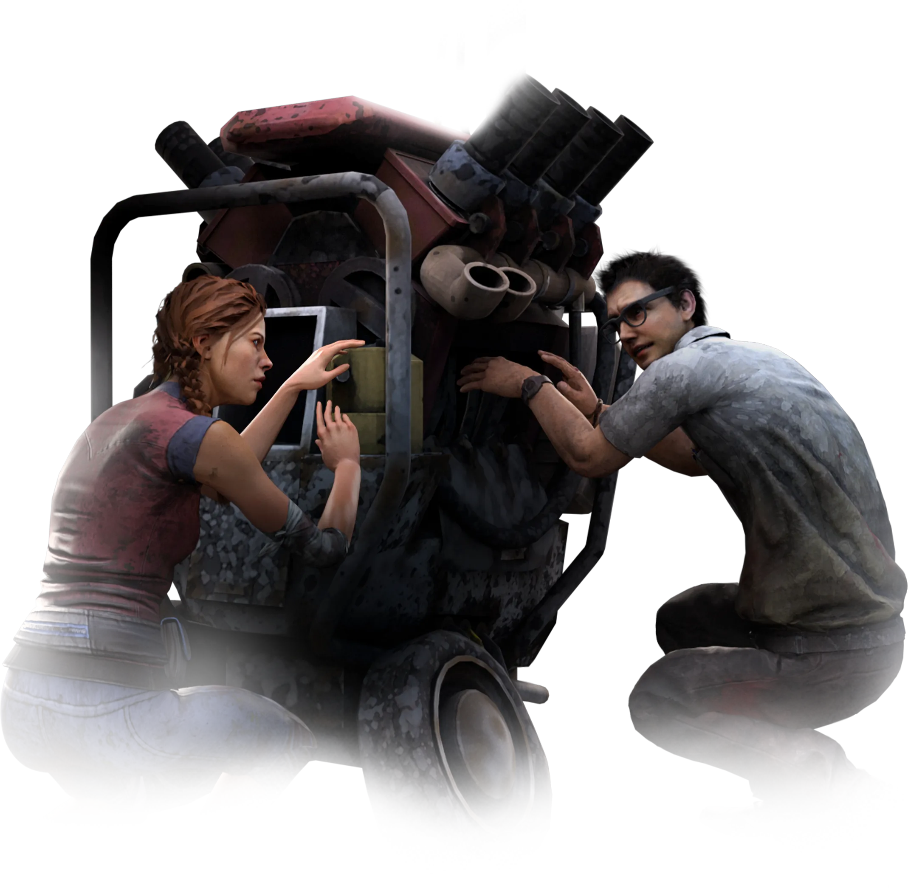

O Assassino: Joga-se numa perspetiva imersiva de primeira pessoa, onde o objetivo é caçar, apanhar e sacrificar os quatro sobreviventes.
Os Sobreviventes: Jogam-se numa perspetiva de terceira pessoa, exigindo cooperação para consertar geradores, fugir das perseguições e escapar com vida.



As perks são habilidades especiais que tanto os Sobreviventes quanto o Assassino podem equipar antes de começar a partida. Elas mudam completamente a estratégia de jogo, oferecendo poderes únicos como maior velocidade, bônus de cura, rastreamento aprimorado ou a capacidade de sabotar ganchos. Escolher a combinação certa de perks é essencial para garantir a sobrevivência ou evitar que alguém escape.

Trancados em cenários dinâmicos que mudam a cada partida, os Sobreviventes precisam ter rapidez e compostura. Cooperar para consertar os geradores e abrir os Portões de Saída é o único caminho para escapar do pesadelo.